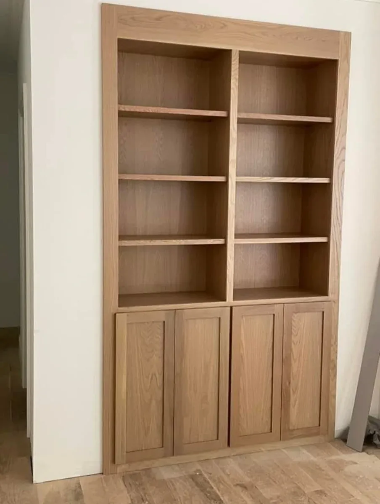
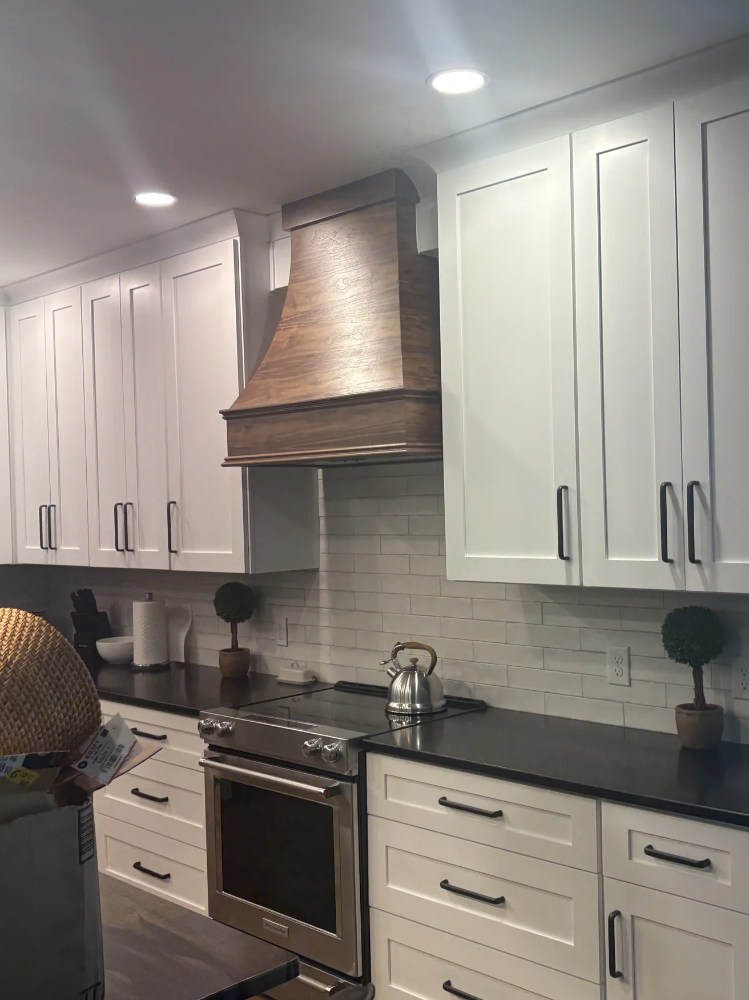

THE SHOP
A shop that
knows its trade.
Since 1998, T-Squared has built and fitted cabinetry for kitchens, baths and living spaces. Good work starts with the right materials, accurate measurements and a clean finish.
Crafted carefully since '98
Craftsmanship
without the fuss.
T-Squared crafts with wood. Custom cabinets, from kitchen to bathroom renovations, work begins with measurements and the right construction for the job.
From material selection through installation, our goal is simple: clean fit, useful function and work that holds up beautifully.
Measure carefully. Build square. Finish the job properly.


THE FINISH
Built to belong.
Materials, proportions and installation all shape the finished room.
We work through the layout and the details before construction, whether the right answer is fully custom cabinetry or a well-chosen cabinet line.
Project inquiry
WORKMANSHIP
Looks good,
don't it?
Good cabinetry isn't just about looking good in a photograph. Doors should line up, drawers should work smoothly, and everything should feel right in the room.
From custom construction to a carefully chosen cabinet line, we focus on the fit, the installation and the finishing details. It's the kind of work you can appreciate every day, not just when the project is finished.
Project inquiryPROJECT INQUIRIES
Ready to discuss the details?
Call or share the basics of the project. Estimates start with a conversation.